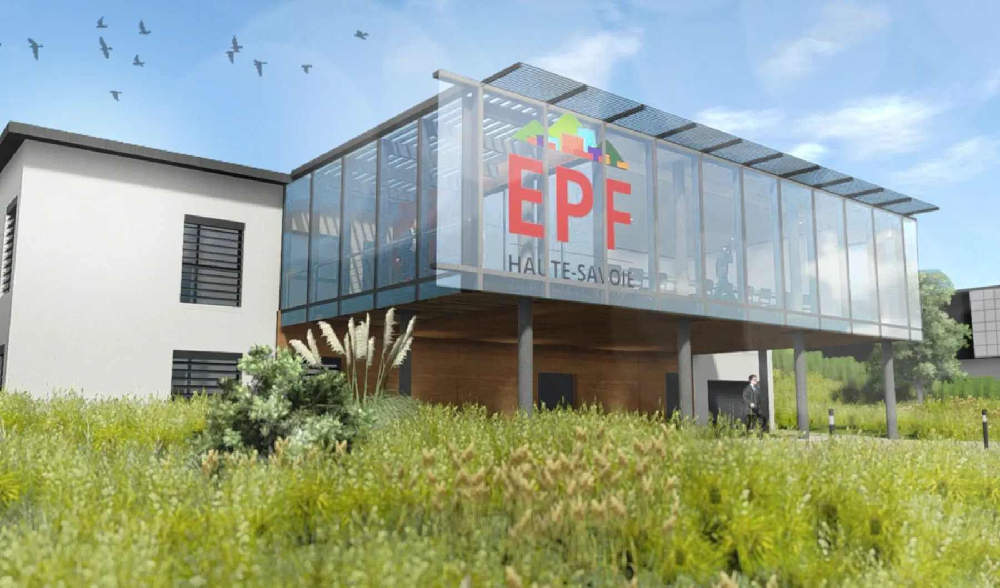

École Condorcet
Une extension qui laisse la cour aux enfants. Meyzieu (Rhône), 2015 – 2016.
Plan 01DéfilerFiche technique
- Lieu
- Meyzieu (Rhône)
- Maître d’ouvrage
- Commune de Meyzieu
- Maître d’œuvre
- Agence Rheinert – Oxygen Architecture
- Surface de plancher
- 250 m²
- Budget
- 400 k€
- Calendrier
- 2015 – 2016
- Catégorie
- Équipement
L’extension de l’école Condorcet à Meyzieu était un projet de rénovation important pour cet établissement situé en centre-ville. En étroite collaboration avec les services techniques de la commune, nous avons conçu une extension qui s’intègre harmonieusement au bâtiment existant.
L’extension comprend un local pour le personnel ATSEM, une extension des sanitaires et une zone de circulation servant de rangement pour les chaussons. Une attention particulière a été portée à ce que l’extension n’empiète pas sur la cour, un espace de détente important pour les enfants.
La façade sud est composée d’une succession de murs végétalisés, perforés et vitrés. Grâce à ce jeu de transparence et de lumière, le bâtiment existant reçoit beaucoup de lumière naturelle.
Les images
5 plans
Cliquez sur une image pour l’agrandir.
